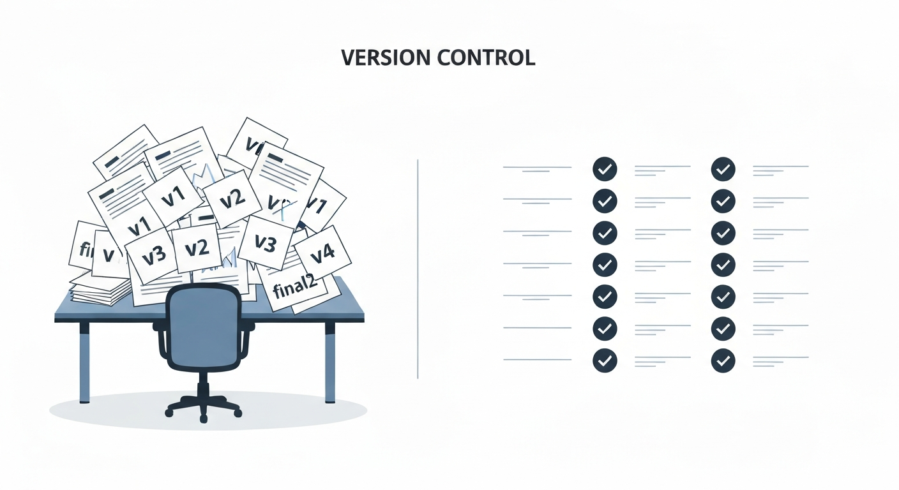
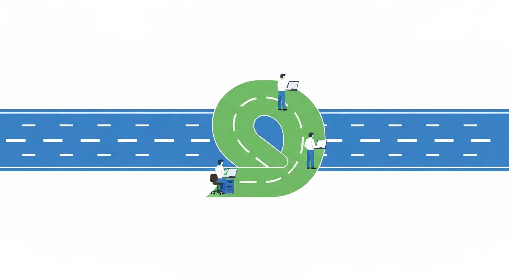

知識ゼロから、チームで使えるようになるまで
株式会社 Opus.net
ファイルの変更履歴を全部記録してくれる仕組み

Git の記録をインターネット上に置いて、チームでアクセスできるようにする場所
💡 Google ドライブを想像するとわかりやすい。
Git = 手元のファイル操作、GitHub = ドライブにアップして共有
| 用語 | 意味 | たとえ |
|---|---|---|
| ローカル | 自分のPC | 手元のノート |
| リモート | GitHub 上（クラウド） | クラウドに保存したノート |
| リポジトリ | 1プロジェクト = 1フォルダ | 案件ごとのフォルダ |
📌 順番: add → commit → push（選ぶ → セーブ → アップ）
チーム作業で一番大事な概念
✅ ブランチで何をやっても、main には一切影響しない

例: 3人でWebサイトを開発する場合
💡 ブランチなしだと、同じファイルを同時に編集してどちらかの変更が消える危険がある
| 接頭辞 | 用途 | 例 |
|---|---|---|
| feature/ | 新機能を作るとき | feature/contact-form |
| fix/ | バグを直すとき | fix/phone-number-bug |
| update/ | 既存の機能を改善するとき | update/header-design |
| docs/ | ドキュメントを変えるとき | docs/readme |
📌 名前を見ただけで「何の作業か」がわかるのがポイント
作業が完成したら、ブランチの内容を main に合流（マージ）させる。
ただし、チーム開発では直接マージせず PR を使う（次のパートで説明）
2人が同じファイルの同じ行を変更すると発生
✅ 壊れているわけではありません。Git が「確認してください」と伝えているだけです。
残したい方を選んで、マーカーを消せば解決。
チーム開発に必要な機能はプランによって変わる
| 機能 | Free（無料） | Team（$4/人/月） |
|---|---|---|
| リポジトリ | 無制限（公開・非公開） | 無制限（公開・非公開） |
| ブランチ保護 | 基本的なルールのみ | 高度なルール設定 |
| PRの必須レビュー | 設定不可 | 承認なしでマージ禁止にできる |
| コードオーナー | なし | 自動でレビュー担当を割り当て |
| 下書きPR | なし | 作業途中でPRを共有できる |
| Actions（自動化） | 2,000分/月 | 3,000分/月 |
| ストレージ | 500 MB | 2 GB |
💡 まずは Free プランで始めて、チーム開発に慣れたら Team への移行を検討。
Opus.net の Organization「team-opus」は作成済み！
マージする前に、チームメンバーに確認・承認してもらう仕組み
💡 書類の稟議・承認フローと同じ
GitHub 上の「やることリスト」。バグ報告や機能追加の依頼に使う。
💡 PR に Closes #3 と書くと、マージ時に Issue #3 が自動で完了になる
この4つだけ覚えて帰ってください
お疲れさまでした 🎉